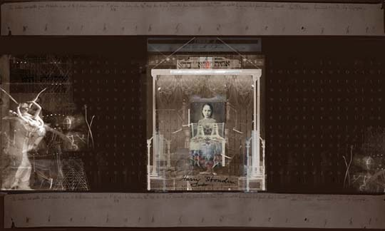
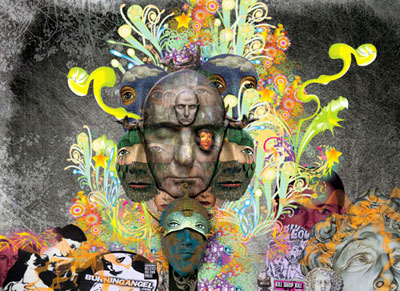
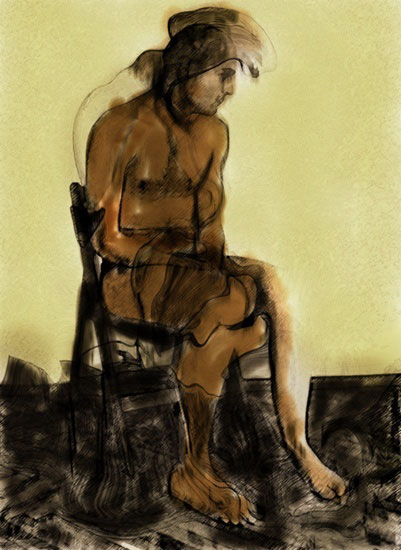

IMAGES OF THE DAY 69
05/11/2023 - 05/20/2023
Abstract/Fantasy
Jungle Virus
by Volovo
05/11/2023
Click image to access artist's full exhibit

Digital Collage 
Persian Gymnast I
by Istvan Horkay
05/12/2023
Click image to access artist's full exhibit
Algorithmic/Fractal
Celtic Journey
by Shari Nees
05/13/2023
Click image to access artist's full exhibit

Photomontage 
No. 5
by Mona Mauri
05/14/2023
Click image to access artist's full exhibit
Photographic amd Painted Art 
A Man
by Pavel Gospodinov
05/15/2023
Click image to access artist's full exhibit
Drawn Art
Icon 1
by Antonio
05/16/2023
Click image to access artist's full exhibit
Drawn/Painted
Illustration Art
The Artist
by Hudson Calasans
05/17/2023
Click image to access artist's full exhibit

Digital Paintings
Image #36
by Hans Dieter Grossman
05/18/2023
Click image to access artist's full exhibit
3D Rendered Art
A Piller of Salt
Firstborn Act 1
by Chaim Ash
05/19/2023
Click image to access artist's full exhibit

Mixed Technique
Fractals and Photographs
Incoming Storm
by John Macpherson
05/20/2023
Click image to access artist's full exhibit

BACK TO IMAGES OF THE DAY 68
NEXT